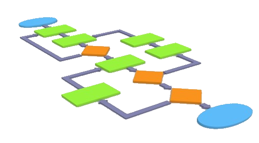
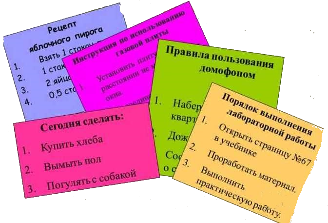

Алгоритмы в нашей жизни

Алгоритмы окружают нас всюду. В повседневной жизни мы часто не замечаем, как используем различные алгоритмы. Потому, что они просты,
понятны и повторяемы. Распланировать свой день, приготовить еду, как добраться до пункта назначения, если известен маршрут, или не известен,
решить задачу на компьютере, тронуться с места на автомобиле (велосипеде).
Но есть и более сложные алгоритмы, которые требуют специальных
знаний и навыков.Например, создание компьютерного сайта, техника искуственного дыхания, выполняемая спасателем или взлет самолета под
управлением пилота. Все это то же алгоритмы. Возникают вопросы: что это такое алгоритмы,для чего они нужны,какие бывают? Ответить на эти и другие вопросы я постарался раскрыть
в проектной работе: "Алгоритмы в нашей жизни".
История возникновения термина "алгоритм"
Понятие и классификация алгоритмов
Основные свойства алгоритмов
Примеры алгоритмов из жизни
Выводы